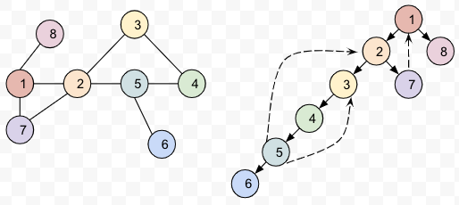
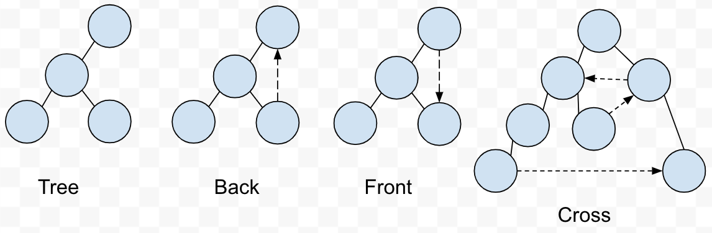
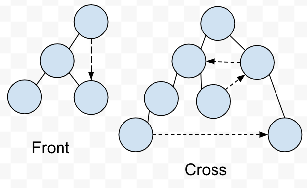
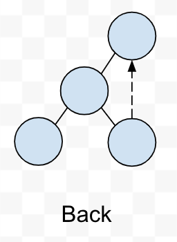
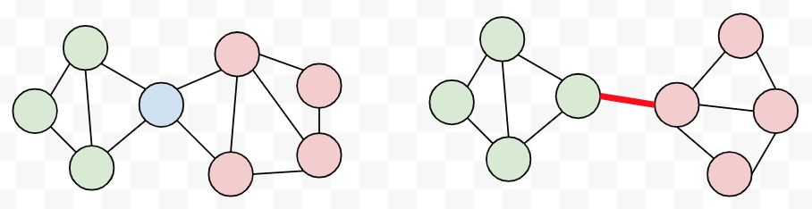

Computer Science 2: Algorithms
Detroit Labs Dev Coaching
2018
Lecture 7
Practice Problem
Prove that in a breadth-first search of an undirected graph G, every edge in G is either a tree edge or a cross edge. A cross edge \((x,y)\) is an edge where \(x\) is neither an ancestor nor a descendant of \(y\).
Depth-First Search
DFS Order

Edge Classifications
Every edge will be a: 
Trees and Back Only

Finding Cycles

Articulation Vertices

Faster Articulation Vertices
Topological Sorting

What are DAGs for?

Topological Sort and DFS
Strongly Connected Components